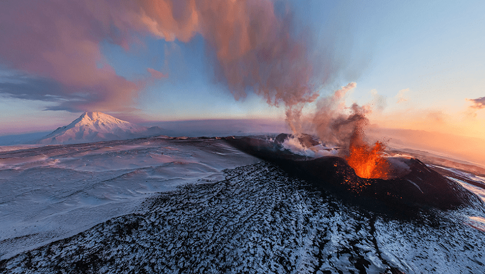

Antartica

Mount Erebus, Antarctica Public Domain Image
Mount Erebus
Antarctica is home to penguins, icebergs, and frigid temperatures. Polar opposite to the rest of the continent, Mount Erebus is quite literally where fire meets ice. It is the southern most active volcano and lava lake on Earth located on Ross island near the McMurdo research station.
This lava lake is formed by the underlying Terror Rift Zone which runs through the continent
of Antarctica. While the volcano can be dangerous to climb for obvious reasons, the danger is
amplified due to its Strambolian eruptions. These smaller more fequent explosions come in the
form of lava bombs and ash that climbers must be aware of at all times.